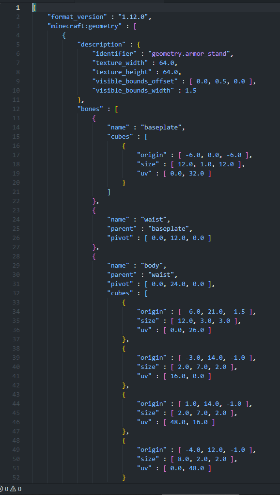

そこで！アドオン製作者の味方！BlockBench

なにこれ？って思う人もいますが、これはマイクラ専用に作られたモデリングソフトです
webでも使えますが、基本的にはソフトをダウンロードするのが一般的ですね
まぁwebでも十分ですがね。スマホとかでも使えないことはないですけど使いにくいですよ
使い方は動画を昔上げたのでよければ
まぁ使い方は簡単です。あとはセンスと技術です。根気強く粘りましょう
こんにちはシューです
マイクラには3Dモデルがあります。今回それのやり方についてです
言わなくてもわかると思いますが、3Dモデル、いわゆる立体ですね
例えばentity、あれも3Dモデルでできています
トライデントとかもそうですし、エンチャントテーブルなどの特殊形状も3Dモデルです
entityならデフォルトの形状が入っています
ファイルパスはバニラリソース/models/entity/ですね
これを使えばentityの見た目やもっとクオリティの高いアイテムやブロックが作れます
極めるとすごいですよ
さて、何か分かったら次は作りたいですよね！
さっきのファイルパスのところで一つ開いてみましょう
今回はアーマースタンドを開いてみます

さぁ！これと同じように造形してみましょう！...は？と思いましたよね
この方法でやってる人もいます...が、そんな常人離れしたことかなり難しいです
マイクラの3Dモデルはこのようなjosn形式でキューブとよばれる一つ一つの四角の大きさを変えて造形しています
頭の中で想像しながら形を作るという作業をしなくてはいけません。そんなめんどくさいこと...やってらんないですよね
簡単な形ならまだいいんですが、例えばハエンドラとかのような形をつくると私の場合6000億年くらいかかります
はいじゃぁjsonを書いて頑張りましょう！とは行かないですよね...
そこで！アドオン製作者の味方！BlockBench
なにこれ？って思う人もいますが、これはマイクラ専用に作られたモデリングソフトです
webでも使えますが、基本的にはソフトをダウンロードするのが一般的ですね
まぁwebでも十分ですがね。スマホとかでも使えないことはないですけど使いにくいですよ
使い方は動画を昔上げたのでよければ
まぁ使い方は簡単です。あとはセンスと技術です。根気強く粘りましょう
どうでしょうか？
3Dモデルを使いこなせれば演出の幅が大きく広がります
ぜひ極めてみましょう
ツイートする